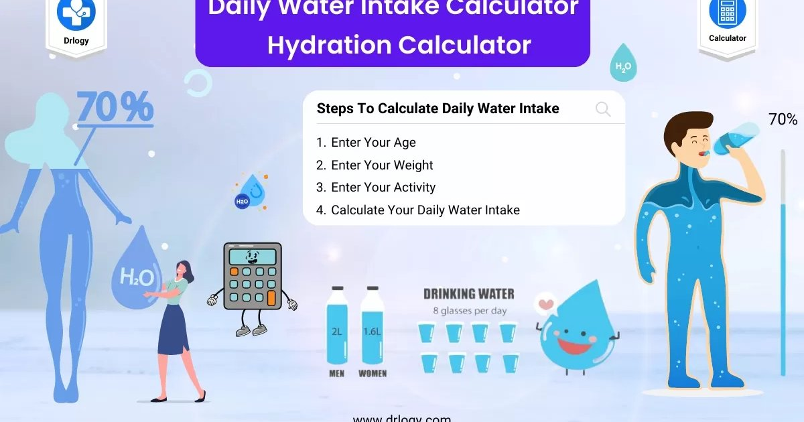

I still remember the first time someone told me to drink eight glasses of water a day. I was maybe 22, fresh out of college, and I believed it completely. Eight glasses, eight ounces each, 64 ounces total, about 1.9 liters. That was my goal for years. And you know what? I felt fine. Not great, not terrible. Just fine. Then I moved to Miami and started exercising more, and suddenly eight glasses felt like nothing. I was thirsty all the time. My urine was dark by mid‑afternoon. I thought something was wrong with me. Nothing was wrong. The eight‑glass rule was just wrong for me. That number came from a 1945 recommendation that said adults need about 2.5 liters of water per day. But that 2.5 liters included water from food — fruits, vegetables, soup, even coffee. The actual amount of plain water you need is less than that. And it depends on your body weight, your climate, your activity level, your altitude, and whether you’re pregnant or breastfeeding. The one‑size‑fits‑all approach is garbage. So let me show you how to calculate your actual individualized goal. It’s not hard. You just need a calculator and about three minutes. Step one is your baseline based on body weight. The standard formula is 30 to 35 milliliters per kilogram of body weight. If you use pounds, it’s about 0.5 ounces per pound. I use the lower end for sedentary people and the higher end for active people. Let’s do an example. A 70‑kilogram (154‑pound) person with light activity. 70 times 30 equals 2,100 milliliters, which is about 71 ounces. That’s 9 cups, already more than the old eight‑glass rule. If that same person exercises moderately, use 35 milliliters per kilogram. 70 times 35 equals 2,450 milliliters, about 83 ounces. That’s 10 cups. So just by adjusting for activity, you’ve already blown past the old rule. Step two is climate. This is the one that tripped me up in Miami. If you live in a tropical or desert climate, you need more fluid because you sweat more, even when you’re not exercising. I use a multiplier of 1.3 for tropical, 1.2 for desert, 1.0 for temperate, and 0.9 for cold. So that 2,450 milliliter baseline for the active person becomes 2,450 times 1.3 equals 3,185 milliliters (108 ounces) in Miami. That’s almost double the old eight‑glass rule. Step three is activity. The baseline already assumed light activity. For heavy exercise, you need to add even more. I measure this by sweat rate. A rough estimate is 500 to 1,000 milliliters (17‑34 ounces) per hour of moderate to intense exercise. For a one‑hour run in Miami, that active person might need an extra 800 milliliters (27 ounces). So total becomes 3,185 plus 800 equals about 4 liters (135 ounces). That’s a lot. But that person is also losing a lot. Step four is altitude. Above 2,500 meters (8,200 feet), you breathe faster and lose more water through your lungs. Add 10% for every 1,000 meters above that threshold. If you’re in Denver at 1,600 meters, the effect is small, maybe 5%. If you’re in the Andes at 4,000 meters, add 15‑20%. Most people don’t need this adjustment, but if you live in the mountains or travel there, it matters. Step five is pregnancy and breastfeeding. Pregnancy adds about 300 milliliters (10 ounces) per day, mostly in the second and third trimesters. Breastfeeding adds 700 to 1,000 milliliters (24‑34 ounces) per day — that milk has to come from somewhere. Those adjustments stack on top of everything else. A breastfeeding athlete in Miami at altitude has very high fluid needs. Let me give you a real example from my practice. A client named Sarah, 65 kilograms (143 pounds), lives in Phoenix (desert), runs 5 miles a day, not pregnant, at sea level. Baseline by weight using 35 mL/kg: 65 times 35 equals 2,275 milliliters (77 ounces). Desert multiplier 1.2: 2,730 milliliters (92 ounces). Activity addition for one hour of running in dry heat: about 700 milliliters (24 ounces). Total: 3,430 milliliters (116 ounces). That’s about 14 cups. Sarah was trying to drink 8 cups and wondering why she had chronic headaches. We bumped her up to 12‑14 cups with electrolytes, and her headaches disappeared in a week. I’m not saying everyone needs 14 cups. A sedentary office worker in Seattle might only need 8‑9 cups. That’s the point. Your number is your number. Not your neighbor’s. Not a 1945 recommendation. One thing I hear a lot is “I can’t drink that much water. I’ll be in the bathroom all day.” Two things about that. First, your body adjusts. When you start drinking more, you’ll pee more for the first few days. Then your kidneys get more efficient and you’ll settle into a new normal. Second, spacing matters. Don’t chug a liter in ten minutes. Spread your intake throughout the day. A sip every 15‑20 minutes is easier on your bladder and better for absorption. The morning 500 milliliters (17 ounces) is non‑negotiable for me. That’s 20% of my daily goal right there. Then I have a 500‑milliliter bottle at my desk. I finish one by mid‑morning, another by lunch, another by mid‑afternoon, and the last by dinner. That’s 2 liters (68 ounces) plus the morning 500 equals 2.5 liters (85 ounces). Then I add workout fluids on top. That system works because I don’t have to think about it. The bottles are visible. The empty bottles remind me to refill. I also use a trick I learned from a client. She marks her water bottle with time labels. “8 AM,” “10 AM,” “12 PM,” “2 PM,” “4 PM,” “6 PM.” When the bottle is empty by the time marker, she’s on track. You can buy bottles like this, or just use a marker on a cheap one. Another trick is to pair hydration with existing habits. Drink a glass of water every time you brush your teeth. Drink before every meal. Drink after every trip to the bathroom — that sounds weird, but it creates a cycle. Pee, then drink. Pee, then drink. It works. The biggest mistake I see is people setting their goal too high and then quitting. They read somewhere that 4 liters (135 ounces) is optimal, so they try to chug 4 liters on day one. They feel bloated and miserable and quit by day three. Start where you are. If you currently drink 2 cups a day, don’t jump to 10. Add one cup per week. Your palate and your bladder need time to adapt. The 4‑liter goal is unrealistic for most people. I’ve seen bodybuilders and ultramarathoners need that much. But your average office worker in a temperate climate? Probably not. Start at 1.5 liters (50 ounces) — that’s 6 cups. Track your urine color. If it’s pale straw, you’re good. If it’s dark, add another cup the next day. Raise slowly until you hit pale straw consistently. That’s your number. I have a tool that does the math for you in five seconds.Daily Water Intake Calculator
Enter your weight, climate, activity, altitude, and life stage. Get your individualized goal in milliliters and ounces, plus a hydration schedule.
All data stays in your browser — we never see it.
Hydration Goal Setter
Set a daily goal, log your intake, and build a streak. The reminders adapt to your progress.
All data stays in your browser — we never see it.